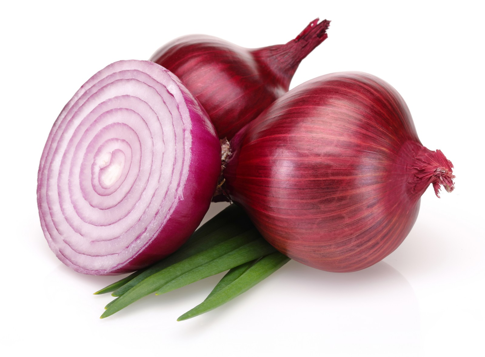

प्याज में है औषधीय गुण :-दिखने में साधारण-सा प्याज एक बेहतरीन सब्जी भी है और एक बेजोड़ औषधि भी।
आइये जानते हैं इसके औषधीय गुण :--
हम प्याज का सलाद एवं सब्जी के रूप में तो उपयोग करते ही हैं,
- यह एक बेहतरीन औषधि भी है।
- प्याज अजीर्ण और पतले दस्त में लाभकारी है।
- यह जीवाणुरोधी, तनावरोधी व दर्द निवारक, मधुमेह नियंत्रक, प्रदाह निवारक, पथरी हटाने वाला और गठियारोधी भी है।
- कहा तो यह भी गया है कि त्वचा पर घिसने से यह बालों में वृद्धि करता है।
- लू-लपट में घर से निकलने के पूर्व जेब में प्याज रखकर निकलने की हिदायत तो बुजुर्ग देते ही रहते हैं।
- वैज्ञानिकों का दावा है कि प्याज खाने से दिल संबंधी रोगों का खतरा बहुत हद तक घट जाता है :-वैज्ञानिकों की मानें तो भारतीय खाने में प्याज का इस्तेमाल बैड कोलेस्ट्रोल को शरीर से बाहर निकालने में मदद करता है, जिससे हर्ट अटैक और स्ट्रोक्स का खतरा कम रहता है। गौरतलब है कि शरीर में कोलेस्ट्रोल का स्तर बढ़ने से ही हर्ट अटैक आता है। प्याज का सेवन शरीर में अच्छे कोलेस्ट्रोल का स्तर बढ़ाने में भी मददगार साबित होता है। हांगकांग के वैज्ञानिकों ने लाल प्याज के शरीर पर पड़ने वाले प्रभाव को जानने के लिए यह अध्ययन किया था। इसके लिए वैज्ञानिकों ने उच्च-कोलेस्ट्रोल युक्त आहार में प्याज को शामिल कर उसके प्रभाव को जानने की कोशिश की। वैज्ञानिकों ने पाया कि जिन लोगों ने आठ सप्ताह तक प्याज का सेवन किया था, उनके शरीर में बैड कोलेस्ट्रोल के स्तर में 20 फीसदी तक की कमी आई।
इस अध्ययन के आधार पर हांगकांग के चाइनीज यूनिवर्सिटी के वैज्ञानिक झेन यू चेन ने दावा किया है कि प्याज का नियमित सेवन करने से ह्वदय संबंधी बीमारियों के खतरे को कम किया जा सकता है।